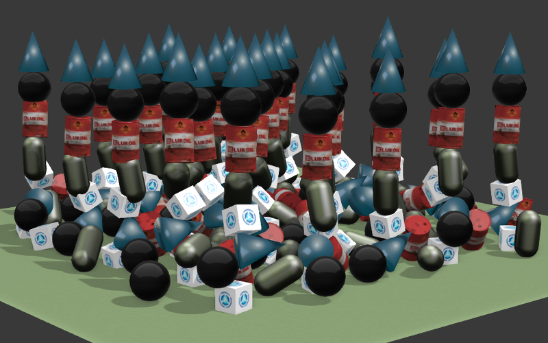
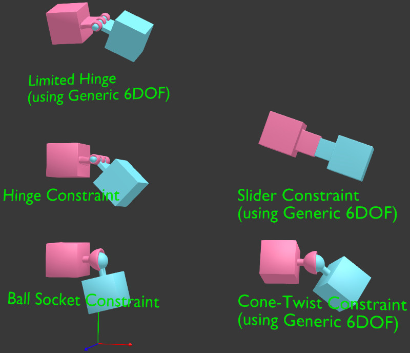
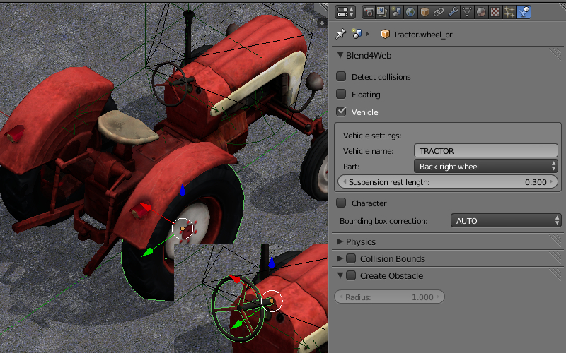
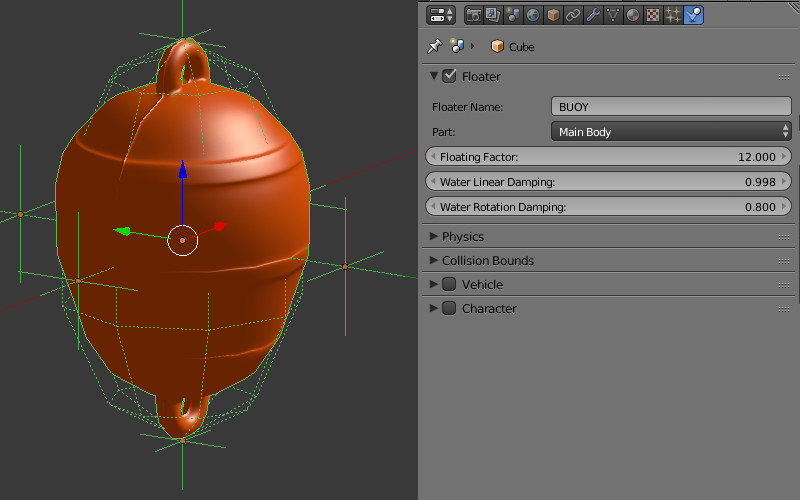
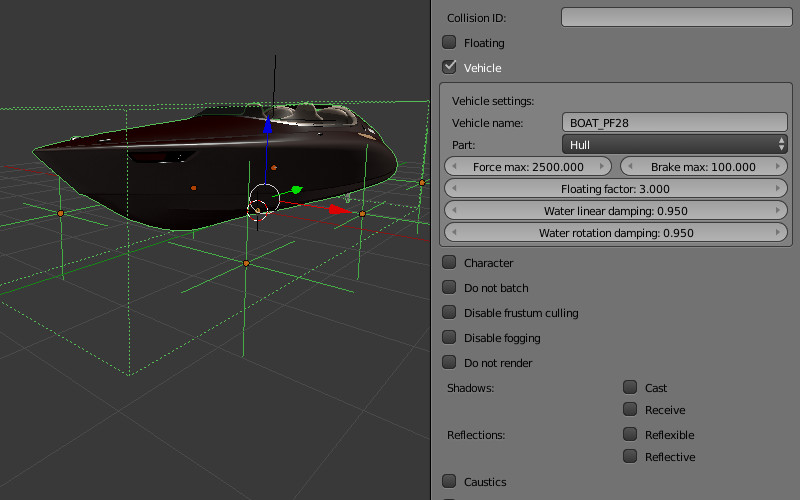

Physics¶
Preparing for Use¶
In order to enable physics on the scene, please use the Enable Physics checkbox in the Physics panel under the scene tab in Blender.

Static Physics Type¶
Can be used to limit the movement of other objects, for example to detect collisions with a landscape, walls and so on. In the physics settings of such an object the Static value (set by default) should be selected for the Physics Type option.

One or multiple physics materials can be assigned to a mesh. Under the Material tab the Special: Collision panel must be activated.

The Ghost option excludes the material from physical interactions but still notifies the application about the contact with it. An example - detecting that the character is located on a vertical ladder.
{kind=link}
The Collision ID field is intended for detecting collisions with specific materials and can be left empty. An example of Collision ID usage is detecting the landscape surface a character is located on - grass, sand, wooden coating and so on.
The Margin field allows to customize the width of the zone where mesh reacts on collisions. This option improves physical collisions simulation stability.
Also, there are material physics settings in this panel. The following settings are supported: Friction, Elasticity.
The Collision Group field corresponds to the physics group which the material belongs to. The Collision Mask field defines all physics groups with which this material will interact.
Dynamic Physics Type¶
Intended for rigid body movement simulation.
{kind=link}
The Object Physics checkbox must be enabled under the object’s Physics panel. The Collision ID field is intended for detecting collisions with a specific object (for example, for detecting proximity of a FPS character to different items) and can be left empty.
In the physics settings of such an object the Rigid Body (with rotations) or Dynamic (without rotations) values can be selected for the Physics Type option. In the Collision Bounds settings the collider type can be selected - the supported types are: Box, Capsule, Sphere, Cylinder, Cone. Also, the following physics parameters can be set: Mass, Damping - for Translation and Rotation.
The Collision Group field corresponds to the physics group which the object belongs to.
The Collision Mask field defines all physics groups with which this object will interact.

Friction and Elasticity are supported for the material of such an object. When multiple materials are used on a single mesh, the physics parameters are taken from the first of them.
For the camera object the Physics Type = Dynamic parameter must be used, and the Object Physics checkbox must be enabled.
Constraints¶
Physical constraints are used for limiting the objects’ degrees of freedom.
{kind=link}
Adding a physical constraint (Rigid Body Joint) to the object can be performed on the Object Constraints panel. The supported types (Pivot Type) are: Ball, Hinge, Cone Twist, Generic 6 DoF. A physical constraint can be added to one of the two interacting objects, while the other object acts as a Target. Both objects can have a static and/or dynamic physics type. In constraints (except Ball) the translation and rotation limits can be set up.

Wheeled Vehicles¶
The model of a vehicle must consist of 6 separate objects - a chassis, 4 wheels and a steering wheel. The chassis’ mesh center should correspond to the mass center. The centers of the wheels’ and the steering wheel’s meshes should be located on the rotation axes. The steering wheel should be oriented in the local space of coordinates - X - the rotation axis, Y - to the right and Z - upwards. The object can have any names.
{kind=link}
For all 6 objects: select the Part, specify the same id in the Vehicle Name field, select the right object type - Chassis, Steering Wheel, Back Right Wheel and so on. The Suspension Rest Length setting is also available for the wheels.
It is neccessary to specify a realistic mass for the chassis (because the default value is only 1 kg). To do this go to the physics settings, choose the Rigid Body value for the Physics Type option and specify the required value (for example, 1000 kg) in the Mass field.
Chassis Settings¶
- Force Max
Maximum driving force of the vehicle.
- Brake Max
Maximum braking coefficient.
- Suspension Compression
Damping coefficient for suspension stretching.
- Suspension Stiffness
Suspension stiffness coefficient.
- Suspension Damping
Suspension damping coefficient.
- Wheel Friction
Friction constant between the wheels and the surface. It should be around 0.8 for realistic vehicles. But it can be increased significantly to achieve a better control (1000 and more).
- Roll Influence
Decreases the wheels’ torque decreasing the probability of the vehicle overturning (0 - no torque, 1 - real physics behavior).
- Max Suspension Travel Cm
Maximum suspension travel in centimeters.
For the Steering Wheel it is necessary to specify the maximum steering angle (Steering Max) and the ratio between the turn of the steering wheel and the turn of the wheels (Steering Ratio). The maximum steering angle value is specified in revolutions. A single revolution equals to 360 degrees. Therefore if Steering Max is equal to one and Steering Ratio is equal to 10, the maximum turn of the steering wheel will be 360 degrees and the maximum turn of the front wheels will be 36 degrees.
On this stage you can export and load the scene into the engine. We recommend to create a road surface with a physics material. To choose the controlled object press the Q key in the Viewer and select the chassis. Use the W, A, S, D keys as controls.
We can additionally tweak the Damping of Translation and Rotation. This will influence the speed and inertion of the vehicle.
The friction and elasticity of the road surface material do not influence the vehicle’s behavior.
Floating Objects¶
{kind=link}
In order for the object to float on the water surface (an object with the Water material), it is neccessary to enable the Floater panel. There are two types of floating objects: Main Body - the floating object itself and Bob - an auxiallary bob-object onto which the buoyancy will be acting. A floating object can have an unlimited number of Bob objects. This can be both meshes or Empty objects.
All objects that are part of the same floating object must have the same name in the Floater Name field.
Floating Object Settings¶
- Floating Factor
Buoyancy coefficient.
- Water Linear Damping
Linear velocity damping when the object is on the water surface (or under water). When the object is not in water the physics settings are used.
- Water Rotation Damping
Rotation damping when the object is on the water surface (or under water). When the object is not in water the physics settings are used.
Floating Vehicles aka Watercrafts¶
{kind=link}
Watercrafts use some parameters from the Vehicle settings and all the settings which are similar to Floater setting. It is neccessary to set the Part type Hull on the main object. Similar to a floating object a watercraft requires auxillary Bob objects.
Watercraft Settings¶
- Force Max
Maximum driving force of the vehicle.
- Brake Max
Maximum braking coefficient.
- Floating Factor
Buoyancy coefficient.
- Water Linear Damping
Linear velocity damping when the object is on the water surface (or under water). When the object is not in water the physics settings are used.
- Water Rotation Damping
Rotation damping when the object is on the water surface (or under water). When the object is not in water the physics settings are used.
Use in Applications¶
The physics system is implemented in the uranium.js module and loaded separately from the engine’s main code. The uranium.js module itself is a modification of the Bullet physics engine, which is ported to work in browsers. In order to activate the physics system, it is enough to put the uranium.js and uranium.js.mem files in the same directory as the source code of the application.
Another way is to explicitly specify the loading path of the uranium.js module by using the following API method:
m_config.set("physics_uranium_path", ".../uranium.js");
Note
When applications are developed within the SDK, the path to the physics engine is detected automatically.
If your application does not use physics, we recommend you to turn off the Enable Physics flag in the Physics panel under the scene tab in Blender. It is also possible to forcibly disable loading of the uranium.js module by calling the following method before initialization of the engine:
m_config.set("physics_enabled", false);